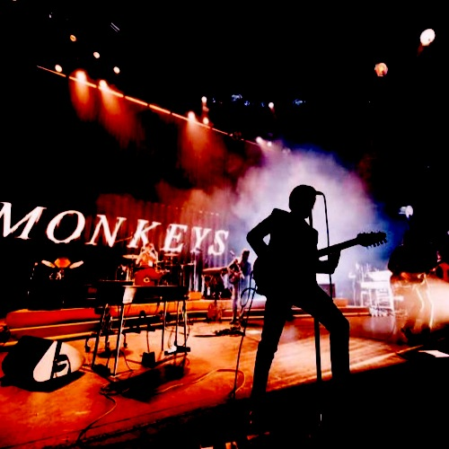

HISTORIA
Conoce la historia de los Arctic Monkeys, sus inicios, subida a la fama, producciones y hitos que convirtieron al grupo de Sheffield en uno de los maximos exponentes del rock actual
DISCOGRAFIA
Repasa toda la discografia principal de Arctic Monkeys, sus mejores discos, caracteritiscas y diseño. Tambien puede escucharlos directamente desde YouTube
PROXIMOS EVENTOS
Enterate de los proximos recitales y eventos del grupo, fechas y lugar para poder ver a los Arctic Monkeys en Vivo

CONTACTO
Envianos tu mensaje, consulta o recomendación. Cada mensaje nos ayuda a mejorar!